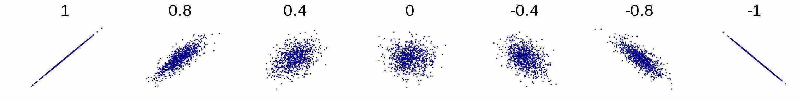
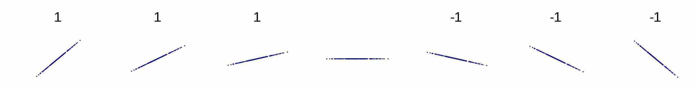
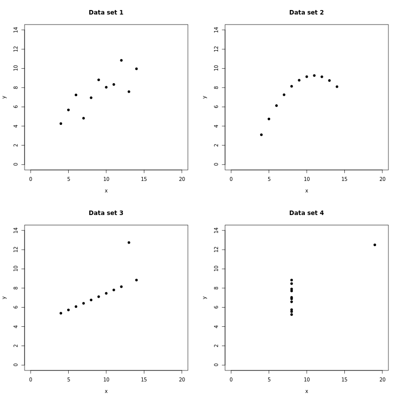

When you find a linear relationship between two variables, it can be helpful to quantify how linear it is.
Planets and moons
According to the National Aeronautics and Space Administration (NASA), the eight planets of our solar system have the following diameters (in kilometres) and number of moons:
Planet Diameter Moons
-------- -------- -----
Mercury 4,879 0
Venus 12,104 0
Earth 12,756 1
Mars 6,792 2
Jupiter 142,984 79
Saturn 120,536 82
Uranus 51,118 27
Neptune 49,528 14A quick inspection of this data suggests that there's a positive relationship between the diameter of a planet and its number of moons: the larger the diameter, the larger the number of moons; the smaller the diameter, the smaller the number of moons.
We can confirm this by visualising the data using points, mapping the diameter variable to one position of a point, and the moons variable to the other position:
This positive relationship between diameter and number of moons looks to be linear. We can confirm this too, by adding a line of best fit, and noticing that it fits the points closely:
The line fits closely, but not perfectly. There's a commonly used measure of how close it is, called the Pearson correlation coefficient.
The Pearson correlation coefficient
The Pearson correlation coefficient (often just called "the correlation coefficient") measures the direction and strength of a linear relationship between two variables.
There are a number of different formulae, all of which give the same result. Here's one. Suppose the two variables are called $X$ and $Y$. Suppose there are $n$ cases in the data. Let the values of $X$ be $x_1, ..., x_n$, and the values of $Y$ be $y_1, ..., y_n$. Let $\bar{x}$ be the mean of the $X$ values, and let $\bar{y}$ be the mean of the $Y$ values. Then:
$$ \text{Correlation coefficient} = \frac{\sum_{i=1}^n (x_i-\bar{x})(y_i-\bar{y}) }{\sqrt{\sum_{i=1}^n (x_i-\bar{x})^2}\sqrt{\sum_{i=1}^n (y_i-\bar{y})^2}} $$
This formula looks daunting, but the idea is quite simple. The most important part is the numerator (the top). For each case in the data, we find the difference between its $X$ value and the mean $X$ value, the difference between its $Y$ value and the mean $Y$ value, and multiply the two. If the $X$ and $Y$ values are both greater than their means, then the two numbers are both positive, and the product is positive. If they're both less than their means, then the two numbers are both negative, and the product is again positive. If one value is greater than its mean and the other is less than its mean, then one number is positive and the other is negative, and the product is negative. In other words, when the values are on the same side of their mean, this increases the correlation coefficient; when they're on opposite sides, this decreases it. In this way, the top of the formula measures the extent to which the values of $X$ and $Y$ vary together.
The bottom part of the formula is always some positive number. It's there just to make sure that the final result is always between -1 and 1 (inclusive). This makes it possible to consistently compare the correlation coefficients of different pairs of variables.
An illustration
You'll hardly ever calculate a correlation coefficient manually - you'll get your software to do it for you. But it's good to understand how the calculation goes, and the best way to understand is to work through an example. So, let's calculate the correlation coefficient for the diameter and moons variables of the planet data set.
To save space, we'll use "D" for "Diameter", "M" for "Moons", "MD" for the mean diameter, and "MM" for the mean number of moons.
Here's what we need to calculate:
$$ \text{Correlation coefficient} = \frac{\sum (D-MD)(M-MM) }{\sqrt{\sum (D-MD)^2}\sqrt{\sum (M-MM)^2}} $$
We start by calculating $MD$, $D-MD$, $(D-MD)^2$, $MM$, $M-MM$, $(M-MM)^2$, $(D-MD)(M-MM)$, and the sums that we need. It's good to use a table, to keep everything organised. Hopefully you'll be able to follow it:
D D-MD (D-MD)^2 M M-MM (M-MM)^2 (D-MD)(M-MM)
------- ------- -------------- ----- ----- -------- ------------
4,879 -45,208 2,043,763,264 0 -25.6 655.36 1,157,324.8
12,104 -37,983 1,442,708,289 0 -25.6 655.36 972,364.8
12,756 -37,331 1,393,603,561 1 -24.6 605.16 918,342.6
6,792 -43,295 1,874,457,025 2 -23.6 556.96 1,021,762.0
142,984 92,897 8,629,852,609 79 53.4 2,851.56 4,960,699.8
120,536 70,449 4,963,061,601 82 56.4 3,180.96 3,973,323.6
51,118 1,031 1,062,961 27 1.4 1.96 1,443.4
49,528 -559 312,481 14 -11.6 134.56 6,484.4
------- ------- -------------- ----- ----- -------- ------------
400,697 20,348,821,791 205 8641.88 13,011,745.4
Mean diameter (MD) = 400,697/8 = 50,087
Mean moons (MM) = 205/8 = 25.6Then we just substitute the values into the formula:
$$ \begin{align*} \text{Correlation coefficient} &= \dfrac{\sum (D-MD)(M-MM) }{\sqrt{\sum (D-MD)^2}\sqrt{\sum (M-MM)^2}} \\ &= \dfrac{13,011,745.4}{\sqrt{20,348,821,791}\sqrt{8641.88}} \\ &= 0.98 \\ \end{align*} $$
So, the correlation coefficient is 0.98.
Properties of the correlation coefficient
Here are the key properties of the correlation coefficient:
-
The correlation coefficient is symmetric in the two variables - it doesn't matter which variable we use as the first variable and which we use as the second, the result is the same either way. In other words, the correlation coefficient between $X$ and $Y$ is equal to the correlation coefficient between $Y$ and $X$.
-
The correlation coefficient is always a unitless number. Even if the values of $X$ are in kilograms (say), and the values of $Y$ are in metres (say), the correlation coefficient is just a number with no units. This is guaranteed by the denominator (the bottom part) - any units for $X$ that appear in the numerator also appear in the denominator, and they cancel out. So too for $Y$.
-
The correlation coefficient is always between -1 and +1, inclusive. This is also guaranteed by the denominator.
-
The sign of the correlation coefficient tells us the direction of the relationship, positive or negative. If the sign is positive, then the direction is positive, which means that as one variable increases, so does the other, and as one variable decreases, so does the other. If the sign is negative, then the direction is negative, which means that as one variable increases, the other decreases, and as one variable decreases, the other increases.
-
The magnitude of the correlation coefficient tells us the strength of the relationship. The closer it is to 1, the stronger the relationship; the closer it is to 0, the weaker the relationship. So, correlation coefficients of 0.87 and -0.87 are both stronger than correlation coefficients of 0.43 and -0.43. Notice that when we're assessing strength we ignore the sign of the number - it's just the magnitude that matters.
Here are some linear relationships and their correlation coefficients (image courtesy of Wikipedia):

From numbers to words
When reporting the magnitude of the correlation coefficient between two variables, it's sometimes more convenient to use words rather than a number. Words are less precise, but they're more meaningful to non-expert audiences. The following conversions from numbers to words are often used:
Number Words
--------- -----------
0.0 - 0.2 Very weak
0.2 - 0.4 Weak
0.4 - 0.6 Moderate
0.6 - 0.8 Strong
0.8 - 1.0 Very strongTwo odd cases
There are two cases in which the correlation coefficient might seem a little odd: when the relationship between $X$ and $Y$ is a perfectly horizontal line, or a perfectly vertical line. For example:
You might expect the correlation coefficient in this case to have magnitude 1, because the relationship is perfectly linear. What about the sign? The relationship is neither positive nor negative: as the $X$ variable increases, the $Y$ variable neither increases nor decreases; similarly, when the $X$ variable decreases, the $Y$ variable neither increases nor decreases. So there is no sign, which means that the correlation coefficient is undefined.
Indeed, you can see that it's undefined by considering the formula above. It has the following expression in the denominator:
$$ \sqrt{\sum_{i=1}^n (y_i-\bar{y})^2} $$
This expression evaluates to zero, and since we can't divide by zero the correlation coefficient is undefined. Why does it evaluate to zero? The $Y$ values are all the same. So, the mean $Y$ value is the same value too, and the difference between each $Y$ value and the mean is 0. So, the sum of those differences is 0, and the square root of the sum is zero too.
Here's the other case:
The correlation coefficient is undefined in this case too. This time the problem is with the other part of the denominator:
$$ \sqrt{\sum_{i=1}^n (x_i-\bar{x})^2} $$
Since the $X$ values are all the same, this expression evaluates to zero. And since we can't divide by zero, the correlation coefficient is undefined.
How to use the correlation coefficient
There's a right and a wrong way to use the correlation coefficient.
Here's the right way. First, visualise the relationship, if any, between $X$ and $Y$. Then, if the visualisation shows that there's a linear relationship, use the correlation coefficient to measure its direction and strength. The direction is usually obvious from the visualisation anyway, so it's measuring the strength that is most useful.
Here's the wrong way. First, calculate the correlation coefficient. Then, use it to deduce the nature of the relationship. The problem is that many quite different relationships have the same correlation coefficient, so it's difficult to tell much about a relationship from the correlation coefficient alone.
Here are some relationships with a correlation coefficient of 1 or -1 (courtesy of Wikipedia) (ignore the middle one). Notice that relationships with the same correlation coefficient can have quite different slopes:

Here are some relationships with a correlation coefficient of 0.82. Notice how much they vary in shape:

Finally, here are some relationships with a correlation coefficient of 0 (courtesy of Wikipedia). Notice that a correlation coefficient of 0 doesn't mean no relationship. Also notice that the relationships are quite diverse: